Back to the Old Table
 Tap for sound
Tap for sound
A way of sitting at the table, older than 2,000 years, and still alive here. Join in, or simply be there to receive it.
Lost almost everywhere. Still alive in Sicily.
The symposium and the Roman banquet.

In ancient Greece and Rome, a meal was a ceremony. Everyone brought something to share.
A game at the Sicilian table.

Before radio and television, people spent their evenings sharing stories at the table. Almost everywhere, this was lost. In Sicily, families kept it alive.
Carlo and Jessie.

Among the last keepers of the game. The only way to protect it is to play it, so guests come from all over the world to join them, or simply to witness it.
“The Greeks call it drinking together, or eating together. We call it living together, because that is when life is truly lived.”
Cicero, on the Roman banquet
From farm to table was our school.
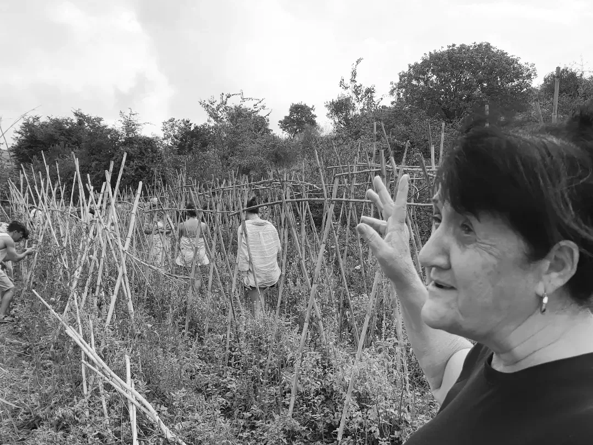
Grandparents spoke
Stories, poems and songs, passed down at the table. The children listened.
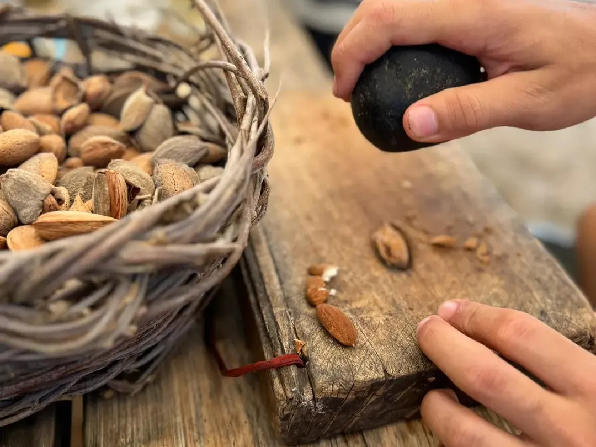
We cooked together
Not a cooking class. Side by side with our grandparents, we learned about food, and about life.
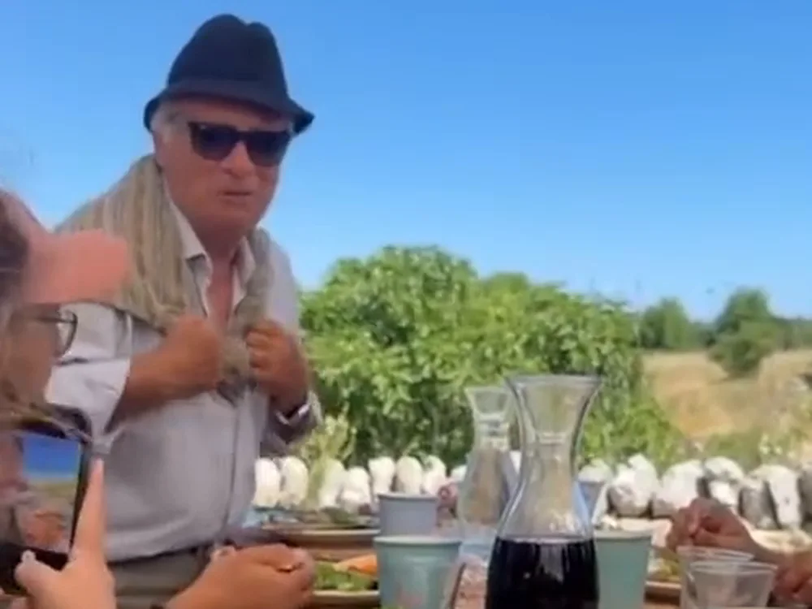
Everyone found a voice
Speaking to the whole table gave each of us courage, and a quiet confidence in ourselves.
“As a child, I didn’t know how precious it was. Then I stepped out into the world, and nobody played it. Nobody knew it. Somehow it survived in our family. We may be the last keepers of this game in Sicily.”
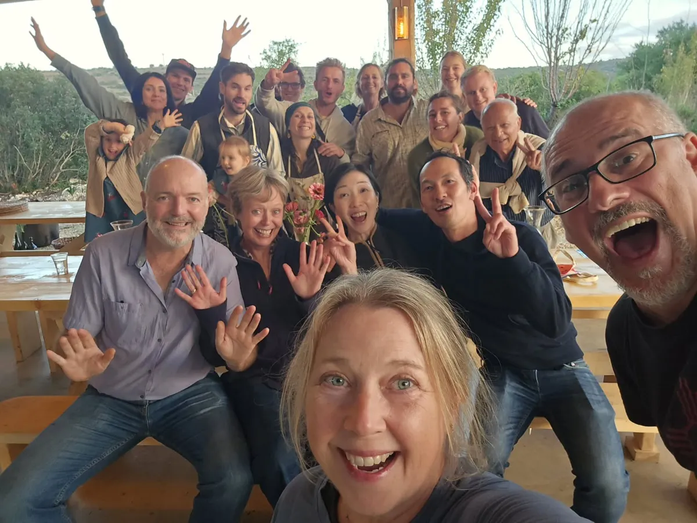
One table, every faith
Jews, Hindus, Muslims and Christians have played together at our table. We laugh, we share the best of our cultures, and every game ends in peace.
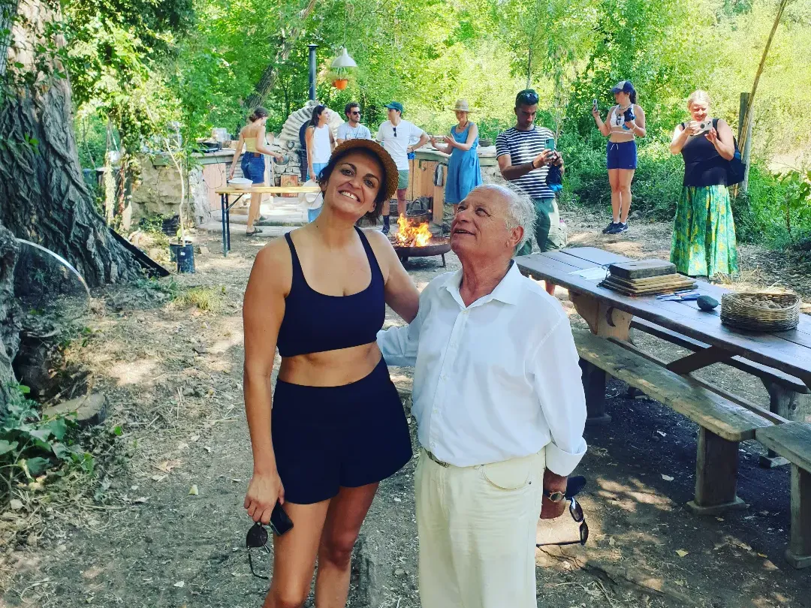
Something ancient comes back
Guests often cry. They feel something old that the world had lost, the table we left for the screen, finding its way home.
Read what they felt at the table.
Real reviews, live from Google. Tap any one to read it there.
Every seat brings a gift.
Tap a seat and see what it carries. The game itself stays a surprise. It is a cultural tradition, not a drinking game.


Music
Someone always finds a rhythm. Music warms the table.
A song
From Sicily or from home. No good voice needed.
A poem
A few lines known by heart, in any language.

A story
Something that happened to you, or to your grandmother. The table leans in.
A dance
Only if your feet ask for it. Clapping along from your seat counts too.
A gift from home
A custom, a blessing, a saying from your own people. This is how the table learns the world.
A child’s voice
Children are never shy for long. They often show the rest of us how.
The gift of listening
You don’t have to do anything. Every gift needs someone to receive it. That is a full seat at the table.
Nobody has to sing, dance or speak. Listening is a full seat at the table.
Strangers in the morning, old friends by the end.
Come to the table. Join in, or simply sit back and watch. Everyone is welcome, just as they are.
Book the Sunday LunchEveryone has a place at the old table.
You don’t have to sing, play or speak. Simply being there is enough. A table this rare lives on through everyone who sees it, and carries it home.
Children
They join in, and often sing the loudest.
Guests who do not drink
The game is about sharing, not wine. Water and our homemade soft drinks are always on the table.
The shy ones
A few kind words count as much as a song.
Guests who would rather watch
Nobody has to play. To listen and receive is to take part.
Follow our days on the farm
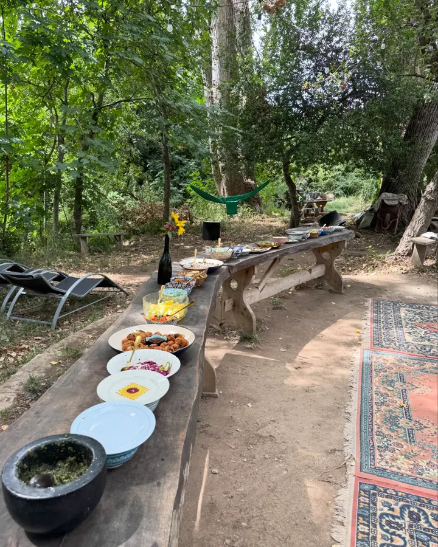
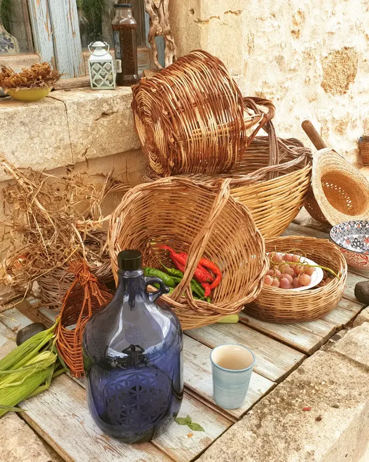
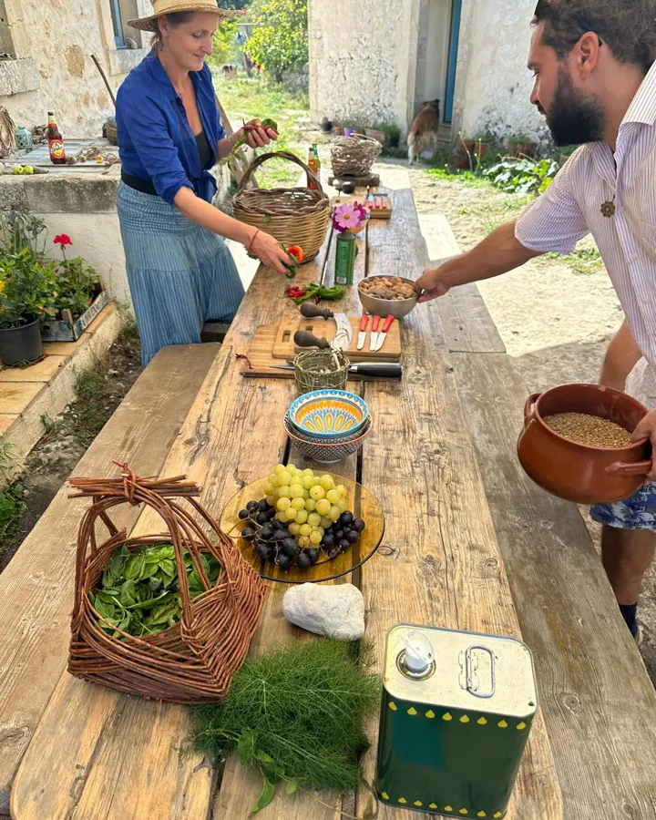
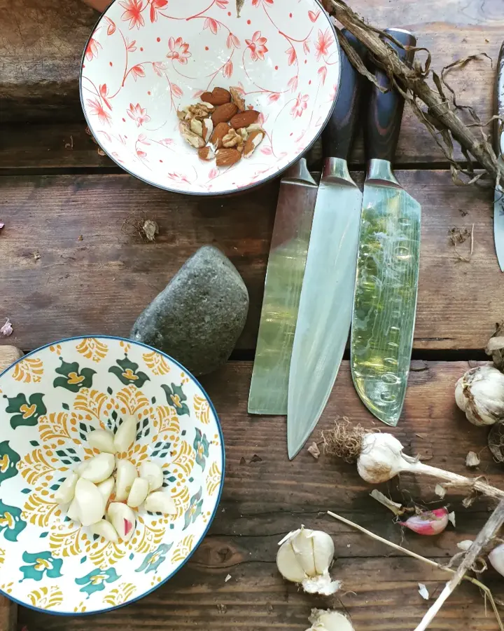
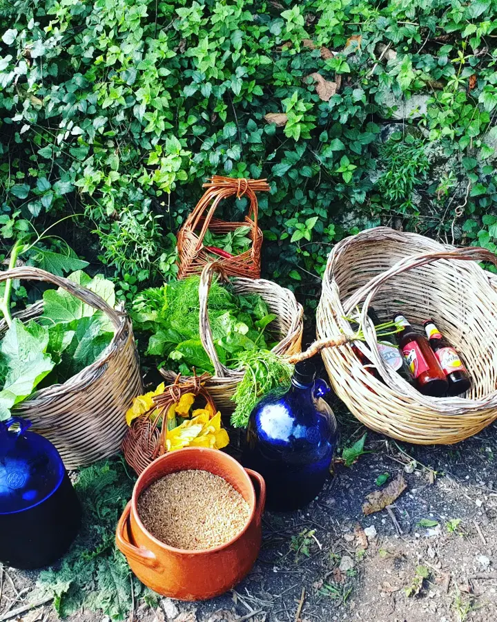
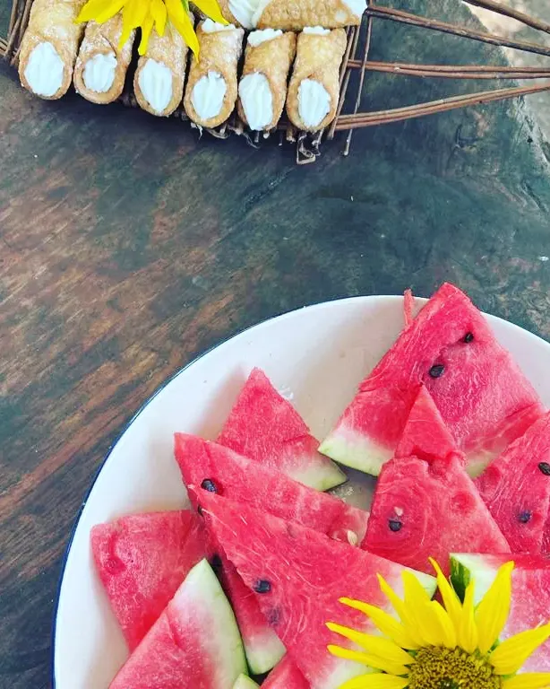
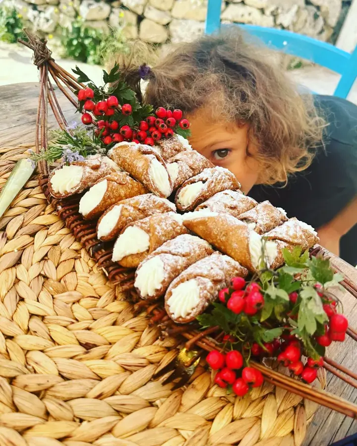
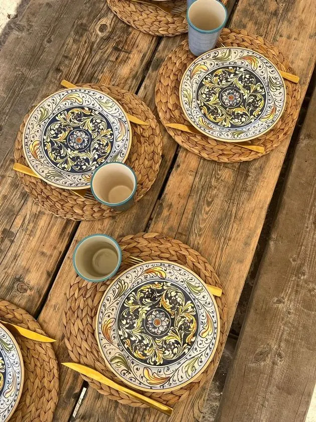
There is a seat for you at our table.
Come to play, or come to witness. Sunday lunch, served every day of the week. Choose your date and we will send everything you need.